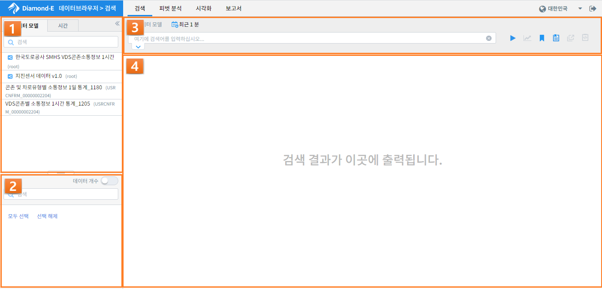
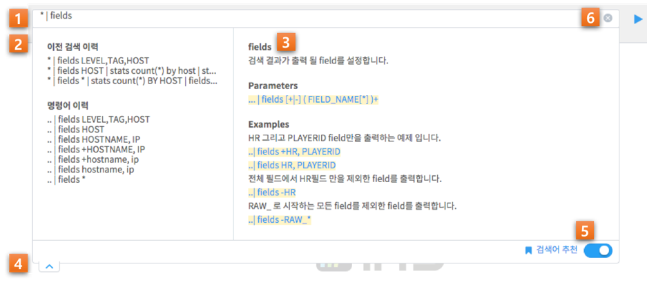
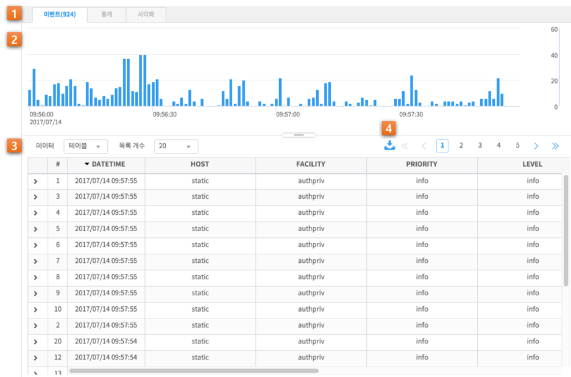
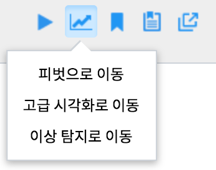
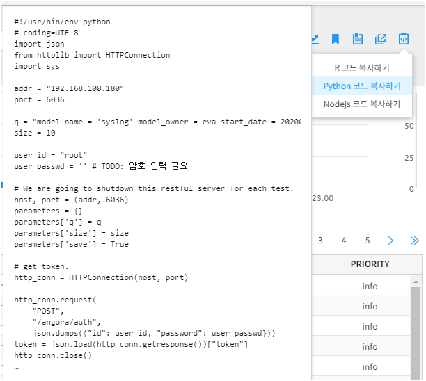

검색¶
검색 화면 개요¶
검색기능은 저장된 테라 바이트 이상의 대량 데이터 중에서 원하는 이벤트만을 쉽고 빠르게 검색하여 분석을 하기 위한 목적으로 사용됩니다. 각종 로그 데이터를 포함한 머신 데이터가 로드되면, 사전에 정의된 각 필드 별로 파싱한 후 레코드단위로 저장됩니다. Diamond-E 로그 분석에서는 이렇게 다수의 필드로 구분되어 저장된 하나의 레코드를 이벤트로 정의하고 있습니다. 사용자는 찾고자 하는 이벤트가 숫자이든 혹은 텍스트이든 관계없이, 검색 창에 검색하고자 하는 키워드(혹은 키워드의 일부) 혹은 검색 조건을 입력함으로써 쉽고 빨리 원하는 이벤트를 검색할 수 있습니다.
사용자는 홈 화면의 메뉴 바에서 검색 메뉴를 선택함으로써 검색 화면으로 이동하게 됩니다. 검색 화면의 구성은 다음과 같습니다.
| 번호 | 구분 | 설명 |
| 1 | 모델/시간 설정 | 검색하고자 하는 데이터 모델과 검색 기간을 설정 |
| 2 | 필드 목록 | 선택한 데이터 모델의 필드들을 표기 |
| 3 | 검색 바 | 검색어를 입력하는 입력란과 부가기능 버튼 컨트롤 |
| 4 | 결과 화면 | 검색 조건에 따른 검색 결과를 출력하는 영역 |
검색하고자 하는 데이터 모델과 검색 기간을 설정한 후, 검색 바에 검색 조건을 입력한 뒤 엔터키나 실행 버튼을 클릭하면 결과 화면에 검색 결과가 출력됩니다.
검색 설정¶
검색 작업을 위해서는 이전 챕터에서 설명한 데이터 모델 선택, 검색 기간 설정 후 적절한 검색어를 입력해야 합니다. 검색어는 직접 입력하거나 추천 기능의 도움을 받아 입력할 수 있습니다.
검색어 입력/추천¶
| 번호 | 구분 | 설명 |
| 1 | 검색어 입력란 | 정해진 문법에 따른 검색 조건 혹은 명령어를 입력하는 란 |
| 2 | 검색 이력 목록 | 검색어 입력에 따라 이전 검색 이력 목록을 표시 |
| 3 | 명령어 도움말 | 입력한 검색어 중 명령어의 도움말을 표시 |
| 4 | 추천 창 접기 버튼 | 검색어 추천 창을 닫는 버튼 |
| 5 | 검색어 추천 버튼 | 검색어 추천 자동 팝업 기능을 on/off 하는 버튼 |
| 6 | 초기화 버튼 | 검색어 입력을 초기화 하는 버튼 |
검색어 입력란에 검색어를 입력하면, 이에 맞추어 검색어 추천 창이 나타나 입력한 내용에 따라 이전 검색 이력을 보여주고, 명령어를 입력했다면 그 명령어의 간략한 설명과 문법, 예시 등을 보여줍니다. 검색어 문법이나 명령어를 작성하는 방법에 대해서는 <Angora command syntax> 등의 문서를 참고하시기 바랍니다.
이전 검색 이력은 키보드 위, 아래 키나 마우스 클릭으로 선택할 수 있으며, 선택하면 바로 입력란에 이전 검색 내용이 입력됩니다. 검색어 추천 창이 자동으로 나타나는 것을 원하지 않는다면 검색어 추천 버튼을 클릭하여 off 상태로 만들면 됩니다.
검색 결과 분석¶
검색 결과는 검색 조건에 따라 이벤트, 통계, 시각화 등 3개의 tab으로 구분되며, 각 탭의 상세한 내용을 아래에 기술하였습니다. 이벤트 탭은 모든 검색 시 이벤트 리스트가 기본적으로 출력되는 탭이며, 통계 탭과 시각화 탭은 검색 바에 stats, pivot 등 통계 결과를 얻는 명령어를 사용하여 검색할 경우에만 표시됩니다.
필드 정보¶

| 번호 | 구분 | 설명 |
| 1 | 필터 입력란 | 필터 목록을 텍스트 입력으로 필터링 |
| 2 | 모든 필드 선택/해제 | 모든 필드 항목의 체크박스를 체크하거나 해제하는 버튼 |
| 3 | 필드 목록 | 선택한 데이터 모델의 필드들을 표기 |
| 4 | 데이터 개수 표시 on/off 버튼 | 각 필드별 데이터 개수 정보를 서버로부터 받을지 여부를 설정하는 버튼 |
| 5 | 필드 통계 정보 창 | 선택한 필드의 상위 10개 값과 분포에 대한 정보를 보여주는 창. 특정 필드를 선택하면 나타난다. |
좌측의 필드 목록은 기본적으로 선택한 데이터 모델의 필드 정보를 보여줍니다. 검색 화면에서는 결과 이벤트 그리드의 열을 제어하는 역할과, 검색 결과에 대한 필드의 통계성 정보를 추가로 제공합니다. 필드 목록에서 각 필드 항목에 있는 체크 박스를 이용하여 이벤트 탭의 검색 결과 그리드의 동일한 이름의 열을 표기하거나 숨길 수 있습니다. 데이터 개수 버튼이 on 상태일 경우, 검색 수행 시 모든 필드에 대해 distinct count 정보를 불러옵니다. 특정 필드를 선택했을 경우에는 필드 통계 정보 창이 팝업되면서 검색 결과 내에서 해당 어떤 종류의 값이 어떤 분포를 나타내고 있는지 상위 10개 값에 대한 상세한 정보를 서버로부터 불러와 보여줍니다.
이벤트¶
이벤트 탭은 검색 결과를 보여주는 기본 탭으로, 아래와 같은 구성으로 나누어집니다.
| 번호 | 구분 | 설명 |
| 1 | 이벤트/통계/시각화 탭 | 이벤트/통계/시각화 각 결과 내용을 전환하는 탭 컨트롤 |
| 2 | 타임라인 그래프 | 시간별 결과 데이터 개수를 나타내는 Bar chart |
| 3 | 검색결과 그리드 | 검색 결과 혹은 검색 결과의 일부분을 보여주는 그리드 뷰 |
| 4 | 결과 내보내기 버튼 | 검색 결과를 파일로 저장하는 버튼 |
이벤트 탭에서는 기본적인 검색 결과에 대한 정보를 보여줍니다. 타임라인 그래프에서는 각 시간대별로 몇 건의 데이터가 있는지 막대 그래프로 나타내며, 검색결과 그리드에서는 데이터의 일부분을 그리드 뷰 형태로 출력합니다. 그래프에서는 드래그로 시간 범위를 선택하거나, 그리드에서 특정 필드의 값을 선택하여 재검색을 수행할 수 있습니다. 자세한 것은 2.1.4 결과 내 재검색(드릴다운)을 참고하시기 바랍니다.
통계 및 시각화¶

| 번호 | 구분 | 설명 |
| 1 | 이벤트/통계/시각화 탭 | 이벤트/통계/시각화 각 결과 내용을 전환하는 탭 컨트롤 |
| 2 | 통계 결과 차트 | 통계 결과 데이터를 시각화한 차트 |
| 3 | 차트 유형 선택 | 차트의 유형(꺾은선형, 막대형, …)을 선택하는 드롭다운 목록 |
| 4 | 차트 스타일 옵션 | 차트의 옵션 설정 다이얼로그를 여는 버튼 |
| 5 | 통계 결과 그리드 | 통계 결과 데이터를 보여주는 그리드 뷰 |
통계 탭과 시각화 탭은 stats, pivot 등의 통계 데이터를 생성하는 명령어를 수행했을 경우에만 활성화됩니다. 통계 탭에서는 stats, pivot 등의 명령어 결과를 그리드 뷰로 보여주며, 시각화 탭에서는 이 결과를 차트로 보여줍니다. 또한 차트 유형을 변경하여 같은 데이터를 꺾은선형, 막대형, 원형 등의 다른 차트로 살펴보거나, 옵션 다이얼로그를 통해 x/y축 레이블, 데이터 값 표시 여부 등 차트의 스타일을 변경할 수도 있습니다.
샘플링 기능¶
샘플링 기능은 대량의 원본 데이터 테이블을 조회하지 않기 위한 기능입니다. 샘플링 설정을 하게 되면 샘플링 테이블을 이용하여 조회작업을 수행하여 검색의 효율이 높아지는 효과가 있습니다. 단, 모든 데이터를 검색하는 것이 아니므로 원본 데이터의 검색결과에 비해 속도는 높아지나 신뢰도는 떨어지는 단점이 있습니다.
샘플링 설정¶

| 구분 | 설명 |
| 사용안함 | 샘플링 기능 사용하지 않고 원본 테이블 대상으로 조회 |
| 원본 | 설정한 샘플링 비율을 바탕으로 샘플링 적용한 결과 반환 |
| 샘플링 테이블 | 샘플링 테이블을 대상으로 조회 |
결과 내 재검색 (드릴다운)¶
시간 범위 지정 / 보고서 불러오기¶

타임라인 차트를 통해 시간이 지남에 따라 발생되는 이벤트의 변화를 확인할 수 있습니다. 특히, 이벤트의 수가 급격하게 증가하거나 감소하게 하는 비정상적인 상황을 쉽게 인지할 수 있습니다. 이러한 비정상 상황에 대하여 상세 분석이 필요한 경우, 특정 막대를 클릭하거나 영역을 드래그로 지정한 후, 지정한 시간 범위를 기준으로 검색을 다시 수행할 수 있습니다.
검색 조건 추가¶

현재 검색된 이벤트의 특정 필드 값을 기준으로 재검색을 수행할 수 있습니다. 위 그림과 같이, 특정 이벤트의 HOST 필드에서 ‘static’ 칸을 클릭하면 아래 3가지 메뉴가 오픈 됩니다.
- 검색에 추가: 본 메뉴를 선택하면, 위 그림과 같이 현재 검색 조건에 “HOST=‘static’”이 자동으로 추가되어 재검색 결과가 화면에 출력됩니다. 즉, 현재 검색 결과에서 HOST가 ‘static’인 이벤트만 다시 검색할 수 있습니다.
- 검색에서 제외: 본 메뉴를 선택하면, 현재 검색 조건에 “HOST!=‘static’”이 자동으로 추가되어 재검색 결과가 화면에 출력됩니다..
- 새로운 검색: 본 메뉴를 선택하면, 기존 검색어 입력을 모두 지워지고 “* HOST=’static’”이 자동 입력되어 재검색 결과가 화면에 출력됩니다. 기존 검색과 무관하게 재검색을 수행하고자 할 경우에 사용할 수 있습니다.
부가 기능: 검색¶
데이터 브라우저에는 사용자의 작업을 돕는 부가기능이 준비되어 있습니다. 이는 아래와 같습니다.

| 번호 | 구분 | 설명 |
| 1 | 실행 | 검색 작업을 실행하는 버튼. 실행 중에는 중지 버튼으로 바뀐다. |
| 2 | 이동 | 피벗, 고급시각화, 이상탐지 화면으로 이동할 수 있는 메뉴 버튼 |
| 3 | 분석 템플릿 | 현재 검색 조건과 여러가지 설정들을 템플릿으로 저장합니다. |
| 4 | 불러오기 | 검색 이력 및 시각화 목록 창을 여는 버튼 |
| 5 | 새 창에서 열기 | 현재 설정 그대로 새 창에서 검색 작업을 실행하는 버튼 |
| 6 | 분석코드 복사 | 분석된 결과를 얻을 수 있는 R, Python 그리고 Node.js 코드를 클립보드로 복사 |
이동¶
이동 버튼을 클릭하면 화면을 선택하는 메뉴가 팝업 레이어 형태로 나타나며, 이 중 하나를 선택하면 현재 선택/입력된 설정(데이터 모델, 시간 범위, 검색어)을 가지고 해당 화면으로 이동합니다. 이를 통해 검색 작업이 다른 고급 분석 작업(피벗 등)의 전처리가 될 수 있습니다.
분석 템플릿¶
분석 템플릿 버튼을 클릭하면 현재 검색 조건과 여러가지 설정들을 템플릿으로 저장하여 향후에도 동일한 환경을 로딩해서 활용할 수 있는 기능을 제공합니다. 또한 저장된 분석 템플릿은 권한에 따라 제작된 템플릿을 다른 사람과 공유할 수 있습니다.
불러오기¶
저장된 분석 템플릿을 바로 불러와서 다시 실행할 수 있습니다. 또한 다른 사람이 저장한 분석 템플릿을 권한에 따라 불러올 수 있습니다.
새 창에서 열기¶
새 창에서 열기 버튼을 클릭하면 현재 선택/입력된 설정(데이터 모델, 시간 범위, 검색어) 그대로 브라우저 새 탭 혹은 새 창을 띄우고 바로 검색을 수행합니다. 이 기능은 주로 서로 다른 검색 결과를 비교하고자 할 때 사용합니다.
분석코드 복사¶
분석된 결과를 얻을 수 있는 각 언어별(R, Python, Node.js) 실행 코드를 생성합니다. 각 언어별 선택 후 클립보드에 복사된 코드를 수행할 수 있습니다.